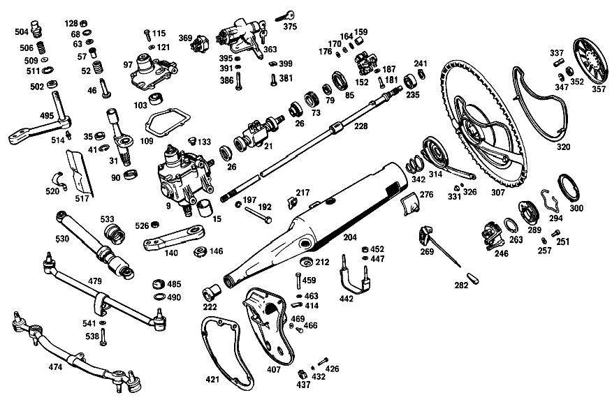

| № | Артикул | Название | Кол. | Примечание | Ограничение |
|---|---|---|---|---|---|
| 9 | A 111 460 43 01 | Рулевой механизм | 1 | Рулевое управление: Влево [697] ДЕТАЛЬ ПОСТАВЛЯЕТСЯ ТОЛЬКО/ИЛИ ТАКЖЕ КАК ЗАП.ЧАСТЬ | |
| 15 | A 111 462 03 50 | - втулка | 1 | ||
| 21 | A 309 460 03 08 | - Червяк рулевого механизма | 1 | Рулевое управление: Влево | |
| 26 | A 000 981 50 27 | - Подшипник | 2 | ||
| 31 | A 309 460 02 11 | - ВАЛ РУЛЕВОЙ | 1 | ||
| 35 | A 111 462 01 37 | - СФЕРИЧЕСКИЙ ВКЛАДЫШ | 1 | [052] NO LONGER AVAILABLE;INSTEAD:309 460 02 11 | |
| 41 | N 000472 030000 | - Стопорное кольцо | 1 | ||
| 46 | A 111 462 04 71 | - Палец | 1 | ||
| 52 | A 111 993 21 01 | - ПРУЖИНА | 1 | [002] 014 FROM STEERING 091870 [004] 021 FROM STEERING 000265 | |
| 57 | A 111 462 04 85 | - УПОР ПРИЖИМНОЙ | 1 | [002] 014 FROM STEERING 091870 [004] 021 FROM STEERING 000265 | |
| 63 | A 111 461 04 62 | - ШАЙБА УПОРНАЯ | 1 | ||
| 68 | A 004 994 92 41 | - предохранитель | 1 | [006] FROM STEERING 001309 | |
| 73 | A 111 461 04 06 | - Регулировочное кольцо | 1 | [010] 014 FROM STEERING 187835 INSTALLED ON 155572-155772 [014] 021 FROM STEERING 006610 | |
| 79 | A 002 997 47 46 | - Уплотнительное кольцо | 1 | [008] 014 FROM STEERING 075323 [012] 012 FROM STEERING 000186 | |
| 85 | A 120 990 05 51 | - Двенадцатигранная гайка | 1 | ||
| 90 | A 001 997 93 46 | - УПЛОТНИТ. КОЛЬЦО | 1 | [016] 014 FROM STEERING 084625 | |
| 97 | A 111 460 08 14 | - КРЫШКА | 1 | Рулевое управление: Влево [020] 014 FROM STEERING 010984 | |
| 103 | A 111 462 02 50 | - втулка | 1 | ||
| 109 | A 111 461 02 80 | - уплотнение | 1 | ||
| 115 | N 000933 008153 | - Винт | - | M8X25\-8.8 | |
| 115 | N 304017 008034 | - Винт с 6-гранной головкой | 4 | M8X25 | |
| 121 | N 000127 008200 | - КОЛЬЦО ПРУЖИННОЕ | 4 | ||
| 128 | N 000934 010014 | - Гайка | - | ||
| 128 | N 304032 010003 | - Шестигранная гайка | 1 | M10 | |
| 133 | N 007604 012100 | - Резьбовая пробка | 1 | [020] 014 FROM STEERING 010984 | |
| 140 | A 111 463 16 01 | РЫЧАГ НА РУЛЕВОЙ КОЛОНКЕ | 1 | Рулевое управление: Влево [022] FROM CHASSIS 000031-016975 NOT INSTALLED ON,SEE FOOTN.59 INSTALLED ON 017103 [059] 016926, 016928, 016932, 016959, 016961- 016963, 016965, 016966, 016968- 016970, 016972- 016974. | |
| 146 | N 000937 022000 | Гайка | 1 | ||
| 152 | A 111 460 03 10 | РУЛ. УПРАВЛ.-СЦЕПЛЕНИЕ | - | ||
| 159 | A 111 462 01 65 | - втулка | 2 | ||
| 164 | A 111 990 30 40 | - ШАЙБА | 2 | ||
| 170 | N 900055 010000 | - Пружинная шайба | 2 | ||
| 176 | A 136 990 95 40 | - ШАЙБА | 2 | ||
| 181 | A 111 990 04 20 | - БОЛТ | 2 | [049] 014 FROM STEERING 150170;021,023 FROM STEERING 004900 | |
| 187 | N 000127 008203 | - Пружинное кольцо | 2 | ||
| 192 | N 000931 010233 | Винт | 3 | STEERING TO FRAME FLOOR UNIT | |
| 197 | N 912004 010102 | Пружинное кольцо | 3 | STEERING TO FRAME FLOOR UNIT | |
| 204 | A 111 460 71 16 | ТРУБЧАТ. СЕКЦИЯ РУЛ. КОЛ. | 1 | Рулевое управление: Влево [026] 014 FROM CHASSIS 011850 INSTALLED ON 011837,011845 NOT INSTALLED ON 011868 | |
| 212 | A 111 997 00 81 | КАБ. ВТУЛКА | 1 | ||
| 217 | A 000 988 34 78 | Скоба | 1 | Рулевое управление: Влево | |
| 222 | A 116 462 00 96 | Манжета | 1 | ||
| 228 | A 111 460 20 09 | ВАЛ РУЛЕВОЙ | 1 | Рулевое управление: Влево [025] 014 UP TO CHASSIS 011849 NOT INSTALLED ON 011837,011845 INSTALLED ON 011868 | |
| 235 | N 000625 006004 | Шарикоподшипник | 1 | ||
| 241 | A 094 990 60 05 | Стопорное кольцо | 1 | ||
| 246 | A 111 462 06 28 | Опорная пластина | 1 | [026] 014 FROM CHASSIS 011850 INSTALLED ON 011837,011845 NOT INSTALLED ON 011868 | |
| 251 | N 000912 006014 | Цилиндрич. винт | 2 | ||
| 257 | N 000137 006100 | Пружинная шайба | - | ||
| 257 | N 000137 006204 | Пружинная шайба | 2 | ||
| 263 | A 094 990 70 05 | Стопорное кольцо | 1 | ||
| 269 | A 001 545 21 24 | ВЫКЛЮЧАТЕЛЬ АВТОМ. | 1 | УКАЗАТЕЛЬ НАПРАВЛЕНИЯ ДВИЖЕНИЯ | |
| 276 | A 111 462 06 96 | МАНЖЕТА | 1 | ||
| 282 | A 000 545 17 37 | КНОПКА | 1 | ЧЕРНЫЙ | |
| 289 | A 000 464 04 28 | КОЛЕСО КОНТАКТНОЕ | 1 | [053] 014 UP TO CHASSIS 077416;021,023 UP TO CHASSIS 077822 | |
| 294 | A 111 994 04 35 | СТОПОРН. КОЛЬЦО | 1 | [053] 014 UP TO CHASSIS 077416;021,023 UP TO CHASSIS 077822 | |
| 300 | A 110 464 00 34 | ДЕРЖАТЕЛЬ | 1 | [053] 014 UP TO CHASSIS 077416;021,023 UP TO CHASSIS 077822 | |
| 307 | A 112 460 00 03 | РУЛЕВОЕ КОЛЕСО | 1 | DARK GRAPHITE GREY [053] 014 UP TO CHASSIS 077416;021,023 UP TO CHASSIS 077822 | |
| 314 | A 111 464 12 36 | - СТУПИЦА | 1 | ||
| 320 | A 100 464 01 15 | - КОЛЬЦО СИГНАЛЬНОЕ | 1 | ||
| 326 | A 111 464 00 73 | - ПРЕДОХРАНИТЕЛЬ | 2 | [417] БОЛЬШЕ НЕ ПОСТАВЛЯЕТСЯ, ЗАКАЗЫВАТЬ КОМПЛЕКТ ПОСТАВКИ | |
| 331 | A 111 464 01 72 | - гайка | 2 | ||
| 337 | A 111 464 00 24 | - втулка | 3 | ||
| 342 | A 111 993 24 01 | ПРУЖИНА | 1 | РУЛ. КОЛЕСО НА РУЛ. ВАЛУ [053] 014 UP TO CHASSIS 077416;021,023 UP TO CHASSIS 077822 | |
| 347 | N 912004 014100 | Пружинное кольцо | 1 | РУЛ. КОЛЕСО НА РУЛ. ВАЛУ | |
| 352 | N 000936 014010 | Гайка | - | ||
| 352 | N 308675 014000 | Шестигранная гайка | - | ||
| 352 | N 308675 014002 | Шестигранная гайка | 1 | РУЛ. КОЛЕСО НА РУЛ. ВАЛУ; M14X1.5\-05 | |
| 357 | A 111 460 06 42 | ПЛАСТИНА НАКЛАДНАЯ | 1 | ЧЕРНЫЙ | |
| 363 | A 000 462 24 30 | ЗАМОК РУЛЕВОГО УПРАВЛЕНИЯ | 1 | Рулевое управление: Влево [026] 014 FROM CHASSIS 011850 INSTALLED ON 011837,011845 NOT INSTALLED ON 011868 | |
| 369 | A 000 462 06 93 | - Переключатель | 1 | [074] FROM CHASSIS:014 10/50,12/52 033593,20/60,22/62 035084; 021,023 10/50,12/52 033973,20/60,22/62 034474 | |
| 375 | A 111 462 01 32 | - КЛЮЧ | 2 | [402] БОЛЬШЕ НЕ ПОСТАВЛЯЕТСЯ | |
| 381 | N 000933 008154 | Винт | - | ||
| 381 | N 304017 008021 | Винт с 6-гранной головкой | 1 | M8X20 | |
| 386 | N 000931 008244 | Винт | 1 | ||
| 391 | N 000127 008200 | КОЛЬЦО ПРУЖИННОЕ | 2 | ||
| 395 | N 000125 008407 | ШАЙБА | 2 | ||
| 399 | A 111 461 01 75 | ШАЙБА | 1 | ||
| 407 | A 111 462 29 95 | ПАНЕЛЬ | 1 | ВЫВОД РУЛ. УПРАВЛЕНИЯ Рулевое управление: Влево [026] 014 FROM CHASSIS 011850 INSTALLED ON 011837,011845 NOT INSTALLED ON 011868 | |
| 414 | A 111 462 08 80 | ПРОКЛАДКА УПЛОТНИТЕЛЬНАЯ | 1 | ||
| 421 | A 111 462 13 80 | Уплотнительная прокладка | 1 | COVER PLATE TO FIRE WALL Рулевое управление: Влево | |
| 426 | N 000931 006016 | БОЛТ | 6 | COVER PLATE TO FIRE WALL | |
| 432 | N 009021 006103 | Шайба | - | ||
| 432 | N 009021 006208 | Шайба | 6 | COVER PLATE TO FIRE WALL; 6 MM | |
| 437 | A 000 990 27 91 | ГАЙКОДЕРЖАТЕЛЬ | - | ||
| 437 | A 000 990 22 91 | ГАЙКОДЕРЖАТЕЛЬ | - | ||
| 437 | A 001 990 67 91 | Гайкодержатель | 6 | [415] ПРИМЕЧ. ПО ЗАМЕНЕ ПРИМЕНИМО ТОЛЬКО ДЛЯ СТОЯЩИХ РЯДОМ ПОЗИЦИЙ | |
| 442 | A 111 460 06 65 | ЛЕНТА НАТЯЖНАЯ | 1 | ||
| 447 | N 000125 008407 | ШАЙБА | 2 | ||
| 452 | N 000985 008001 | ГАЙКА | 4 | ||
| 459 | N 000933 008119 | Винт | - | Коробка передач | |
| 459 | N 304017 008042 | Винт с 6-гранной головкой | 1 | Коробка передач | |
| 463 | N 000137 008204 | Пружинная шайба | - | Коробка передач | |
| 463 | N 000137 008212 | Пружинная шайба | 1 | Коробка передач | |
| 466 | N 000561 006103 | Винт | 1 | Коробка передач | |
| 469 | N 000137 006204 | Пружинная шайба | 1 | Коробка передач | |
| 474 | A 111 460 19 05 | ТЯГА РУЛЕВАЯ | 1 | Рулевое управление: Влево [022] FROM CHASSIS 000031-016975 NOT INSTALLED ON,SEE FOOTN.59 INSTALLED ON 017103 [059] 016926, 016928, 016932, 016959, 016961- 016963, 016965, 016966, 016968- 016970, 016972- 016974. | |
| 479 | A 110 460 02 05 | Рулевая тяга | 1 | [024] 014 FROM CHASSIS 016976 INSTALLED ON,SEE FOOTN.59 NOT INSTALLED ON 017103 [059] 016926, 016928, 016932, 016959, 016961- 016963, 016965, 016966, 016968- 016970, 016972- 016974. | |
| 485 | A 000 338 02 97 | - МАНЖЕТА | - | ||
| 485 | A 000 338 13 97 | - Эластомерная манжета | 4 | [023] UP TO CHASSIS 016975 NOT INSTALLED ON,SEE FOOTN.59 INSTALLED ON 017103 [059] 016926, 016928, 016932, 016959, 016961- 016963, 016965, 016966, 016968- 016970, 016972- 016974. [058] NO LONGER AVAILABLE INDIVIDUALLY,INSTEAD:114 586 01 33 | |
| 485 | A 000 338 13 97 | - Эластомерная манжета | 2 | [024] 014 FROM CHASSIS 016976 INSTALLED ON,SEE FOOTN.59 NOT INSTALLED ON 017103 [059] 016926, 016928, 016932, 016959, 016961- 016963, 016965, 016966, 016968- 016970, 016972- 016974. [058] NO LONGER AVAILABLE INDIVIDUALLY,INSTEAD:114 586 01 33 | |
| 490 | A 000 338 09 63 | - Стяжное кольцо | 4 | [023] UP TO CHASSIS 016975 NOT INSTALLED ON,SEE FOOTN.59 INSTALLED ON 017103 [059] 016926, 016928, 016932, 016959, 016961- 016963, 016965, 016966, 016968- 016970, 016972- 016974. [058] NO LONGER AVAILABLE INDIVIDUALLY,INSTEAD:114 586 01 33 | |
| 490 | A 000 338 09 63 | - Стяжное кольцо | 2 | [024] 014 FROM CHASSIS 016976 INSTALLED ON,SEE FOOTN.59 NOT INSTALLED ON 017103 [059] 016926, 016928, 016932, 016959, 016961- 016963, 016965, 016966, 016968- 016970, 016972- 016974. [058] NO LONGER AVAILABLE INDIVIDUALLY,INSTEAD:114 586 01 33 | |
| 495 | A 111 460 07 19 | РЫЧАГ ПРОМЕЖУТОЧНЫЙ | 1 | [023] UP TO CHASSIS 016975 NOT INSTALLED ON,SEE FOOTN.59 INSTALLED ON 017103 [059] 016926, 016928, 016932, 016959, 016961- 016963, 016965, 016966, 016968- 016970, 016972- 016974. | |
| 502 | A 111 463 00 60 | Уплотнительное кольцо | 1 | ||
| 504 | A 111 463 01 33 | Запорная крышка | 1 | ||
| 506 | A 111 993 04 01 | Нажимная пружина | 1 | ||
| 509 | A 111 463 00 62 | Прижимная шайба | 1 | ||
| 511 | A 181 994 00 10 | Стопорная шайба | 1 | ||
| 514 | N 071412 008101 | ПРЕСС-МАСЛЁНКА | - | ||
| 514 | N 071412 008102 | Пресс-масленка | 1 | ||
| 517 | A 111 463 00 90 | ЗАЩИТНАЯ ПАНЕЛЬ | 1 | Рулевое управление: Влево [028] 014 FROM CHASSIS 065229 [029] 021,023 FROM CHASSIS 064322 | |
| 520 | A 111 463 11 40 | Держатель | 1 | Рулевое управление: Влево [028] 014 FROM CHASSIS 065229 [029] 021,023 FROM CHASSIS 064322 | |
| 526 | A 120 990 01 55 | гайка | 2 | DRAG LINK TO PITMAN ARM [023] UP TO CHASSIS 016975 NOT INSTALLED ON,SEE FOOTN.59 INSTALLED ON 017103 [059] 016926, 016928, 016932, 016959, 016961- 016963, 016965, 016966, 016968- 016970, 016972- 016974. | |
| 526 | A 120 990 01 55 | гайка | 4 | DRAG LINK TO PITMAN ARM [024] 014 FROM CHASSIS 016976 INSTALLED ON,SEE FOOTN.59 NOT INSTALLED ON 017103 [059] 016926, 016928, 016932, 016959, 016961- 016963, 016965, 016966, 016968- 016970, 016972- 016974. | |
| 530 | A 000 463 35 32 | АМОРТИЗАТОР | - | ||
| 533 | A 110 463 01 96 | - МАНЖЕТА | 1 | TO 000 463 35 32 | |
| 538 | N 000960 010026 | Винт | - | ||
| 538 | N 000961 010031 | Винт | 1 | [024] 014 FROM CHASSIS 016976 INSTALLED ON,SEE FOOTN.59 NOT INSTALLED ON 017103 [059] 016926, 016928, 016932, 016959, 016961- 016963, 016965, 016966, 016968- 016970, 016972- 016974. | |
| 541 | N 912004 010102 | Пружинное кольцо | 1 | [024] 014 FROM CHASSIS 016976 INSTALLED ON,SEE FOOTN.59 NOT INSTALLED ON 017103 [059] 016926, 016928, 016932, 016959, 016961- 016963, 016965, 016966, 016968- 016970, 016972- 016974. | |
| 549 | A 111 460 45 01 | РУЛЕВОЕ УПРАВЛЕНИЕ | - | Рулевое управление: Влево | |
| 555 | A 112 460 12 02 | - КОРПУС | - | Рулевое управление: Влево | |
| 555 | A 109 460 04 02 | - КОРПУС | 1 | Рулевое управление: Влево | |
| 559 | A 001 997 02 45 | - Уплотнительное кольцо | - | ||
| 559 | A 013 997 36 48 | - УПЛОТНИТ. КОЛЬЦО | 1 | ||
| 563 | A 000 981 82 10 | - Игольчатый подшипник | 1 | ||
| 567 | A 001 997 25 45 | - Уплотнительное кольцо | 5 | ||
| 572 | A 112 997 00 30 | - Резьбовая пробка | 1 | ||
| 574 | A 000 997 87 20 | - Уплотнительное кольцо | 1 | ||
| 576 | N 007604 010102 | - Резьбовая пробка | - | ||
| 576 | N 007604 010108 | - Резьбовая пробка | 1 | [402] БОЛЬШЕ НЕ ПОСТАВЛЯЕТСЯ [031] 014 FROM CHASSIS 024934 [033] 021 FROM CHASSIS 024929 | |
| 578 | N 007603 010100 | - Уплотнительное кольцо | 1 | 10X13.5 AL [031] 014 FROM CHASSIS 024934 [033] 021 FROM CHASSIS 024929 | |
| 581 | A 112 460 28 85 | - ПОРШЕНЬ | 1 | с WORM AND SLEEVE VALVE Рулевое управление: Влево | |
| 584 | A 112 460 11 14 | - КРЫШКА | - | Рулевое управление: Влево | |
| 584 | A 112 460 20 14 | - КРЫШКА | 1 | Рулевое управление: Влево | |
| 587 | A 001 997 26 45 | - УПЛОТНИТ. КОЛЬЦО | - | ||
| 587 | A 014 997 61 48 | - Уплотнительное кольцо | 1 | ||
| 589 | A 112 460 00 61 | - Уплотнительное кольцо | 1 | ||
| 592 | A 112 462 01 62 | - ШАЙБА УПОРНАЯ | 1 | ||
| 595 | A 000 994 26 41 | - ПРЕДОХРАНИТЕЛЬ | 1 | ||
| 597 | A 112 461 01 62 | - ШАЙБА УПОРНАЯ | 1 | ||
| 599 | A 000 981 04 18 | - ПОДШИПНИК РОЛИКОВЫЙ | 2 | ||
| 603 | A 000 981 63 10 | - Игольчатый подшипник | 1 | ||
| 605 | A 112 460 03 86 | - РЕЗЬБ. ПАТРОН | 1 | ||
| 608 | A 000 997 97 45 | - Уплотнительное кольцо | 1 | ||
| 611 | A 005 997 58 46 | - Уплотнительное кольцо | 1 | ||
| 614 | A 001 997 40 40 | - Уплотнительное кольцо | 1 | ||
| 616 | A 000 994 26 41 | - ПРЕДОХРАНИТЕЛЬ | 1 | ||
| 619 | A 120 990 05 51 | - Двенадцатигранная гайка | 1 | ||
| 621 | A 112 995 00 20 | - ХОМУТ | 1 | ||
| 624 | A 120 990 05 20 | - болт | 1 | ||
| 627 | A 112 994 00 05 | - Стопорная шайба | 1 | ||
| 630 | A 112 460 15 85 | - ПОРШЕНЬ | 1 | Рулевое управление: Влево | |
| 633 | A 000 981 39 27 | - РАД.-УПОРН. ПОДШИПНИК | 1 | ||
| 637 | A 112 466 01 73 | - Стопорное кольцо | 1 | ||
| 639 | A 000 981 40 27 | - РАД.-УПОРН. ПОДШИПНИК | 1 | ||
| 642 | A 112 466 19 05 | - КРЫШКА | 1 | ||
| 644 | A 112 466 01 34 | - КОЛЬЦО РЕЗЬБОВОЕ | 1 | ||
| 646 | A 112 466 01 60 | - Уплотнительное кольцо | 1 | ||
| 649 | A 004 997 44 45 | - Уплотнительное кольцо | 1 | ||
| 656 | A 112 993 95 01 | - пружина | 2 | ||
| 660 | A 112 466 04 62 | - ШАЙБА УПОРНАЯ | 2 | ПО НЕОБХОДИМОСТИ 1.0 MM [402] БОЛЬШЕ НЕ ПОСТАВЛЯЕТСЯ | |
| 667 | A 000 994 38 41 | - ПРЕДОХРАНИТЕЛЬ | 2 | ||
| 670 | A 112 991 01 41 | - ШТИФТ | 2 | ||
| 673 | A 112 466 02 75 | - ШАЙБА | 2 | ||
| 675 | A 112 993 19 02 | - ПРУЖИНА | 1 | ||
| 678 | A 000 994 54 41 | - ПРЕДОХРАНИТЕЛЬ | 1 | ||
| 680 | N 000933 010105 | - Винт | 4 | ||
| 683 | N 000127 010200 | - Пружинное кольцо | 4 | ||
| 686 | A 000 420 08 55 | - Клапан выпуска воздуха | 1 | ||
| 688 | A 000 421 71 87 | - КОЛПАЧОК | - | ||
| 688 | A 000 421 08 87 | - Защитный колпачок | 1 | ||
| 690 | A 112 466 11 05 | - КРЫШКА | 1 | ||
| 693 | A 112 466 12 05 | - КРЫШКА | 1 | СВЕРХУ Рулевое управление: Влево | |
| 695 | A 112 997 17 72 | - Штуцер | 1 | ОБРАТНАЯ МАГИСТРАЛЬ | |
| 698 | N 007603 014100 | - Уплотнительное кольцо | 1 | 14X18\-AL | |
| 701 | A 112 466 03 80 | - уплотнение | 1 | ||
| 704 | A 112 997 21 72 | - ШТУЦЕР | 1 | ДАВЛЕНИЕ [031] 014 FROM CHASSIS 024934 [033] 021 FROM CHASSIS 024929 | |
| 707 | A 005 997 98 45 | - Уплотнительное кольцо | 1 | ||
| 710 | A 112 460 05 11 | - ВАЛ РУЛЕВОЙ | 1 | ||
| 713 | A 111 462 04 71 | - Палец | 1 | ||
| 716 | A 111 993 21 01 | - ПРУЖИНА | 1 | ||
| 719 | A 111 462 04 85 | - УПОР ПРИЖИМНОЙ | 1 | ||
| 721 | A 111 461 04 62 | - ШАЙБА УПОРНАЯ | 1 | ||
| 724 | A 004 994 92 41 | - предохранитель | 1 | ||
| 729 | A 109 460 02 15 | - КРЫШКА | 1 | Рулевое управление: Влево | |
| 731 | A 001 997 02 45 | - Уплотнительное кольцо | - | ||
| 731 | A 013 997 36 48 | - УПЛОТНИТ. КОЛЬЦО | 1 | ||
| 734 | A 000 981 81 10 | - Игольчатый подшипник | 1 | ||
| 736 | A 005 997 59 46 | Уплотнительное кольцо | 1 | ||
| 739 | A 001 997 39 40 | - Уплотнительное кольцо | 1 | ||
| 742 | A 000 994 53 41 | - Стопорное кольцо | 2 | ||
| 744 | A 002 997 47 45 | - Уплотнительное кольцо | 1 | ||
| 747 | A 004 997 44 45 | - Уплотнительное кольцо | 1 | ||
| 749 | A 112 993 97 01 | - пружина | 1 | ||
| 752 | N 000912 008096 | - Винт | - | ||
| 752 | N 000912 008202 | - Цилиндрич. винт | 6 | ||
| 754 | N 000137 008100 | - Пружинная шайба | 6 | ||
| 760 | A 112 466 01 72 | - ГАЙКА | 1 | ||
| 764 | A 001 997 01 45 | - Уплотнительное кольцо | 1 | ||
| 767 | N 007603 010100 | - Уплотнительное кольцо | 2 | 10X13.5 AL | |
| 770 | A 108 990 00 51 | - ГАЙКА | 1 | ||
| 773 | N 001587 010000 | - ГЛУХАЯ ГАЙКА | 1 | ||
| 775 | A 112 463 16 01 | РЫЧАГ НА РУЛЕВОЙ КОЛОНКЕ | 1 | Рулевое управление: Влево | |
| 778 | N 000937 022000 | Гайка | 1 | РЫЧАГ НА РУЛЕВОЙ КОЛОНКЕ К РУЛЕВОМУ МЕХАНИЗМУ | |
| 781 | A 112 460 00 19 | РЫЧАГ ПРОМЕЖУТОЧНЫЙ | 1 | Рулевое управление: Влево | |
| 789 | A 127 460 05 80 | НАСОС ГИДРАВЛ. | - | ||
| 791 | A 000 991 06 68 | - Призматическая шпонка | 1 | ||
| 797 | A 000 236 00 71 | - БОЛТ | 3 | ||
| 799 | A 001 990 43 01 | - болт | 1 | ||
| 805 | A 129 460 00 35 | ДЕРЖАТЕЛЬ | 1 | [070] FROM CHASSIS: 014 10/50,12/52 032108,20/60,22/62 032172; 021,023 10/50,12/52 032118,20/60,22/62 032193 | |
| 808 | N 000912 010043 | Винт | 1 | КРОНШТЕЙН НА БЛОКЕ ЦИЛИНДРОВ | |
| 811 | N 912004 010102 | Пружинное кольцо | 2 | КРОНШТЕЙН НА БЛОКЕ ЦИЛИНДРОВ | |
| 814 | N 000912 008111 | Цилиндрич. винт | - | ||
| 814 | N 000000 000190 | Цилиндрич. винт | 1 | КРОНШТЕЙН НА МАСЛЯНОМ КАРТЕРЕ | |
| 816 | N 000127 008203 | Пружинное кольцо | 1 | КРОНШТЕЙН НА МАСЛЯНОМ КАРТЕРЕ | |
| 819 | N 000433 008406 | Шайба | 1 | КРОНШТЕЙН НА МАСЛЯНОМ КАРТЕРЕ | |
| 823 | A 180 155 08 51 | Проставочное кольцо | 1 | КРОНШТЕЙН НА МАСЛЯНОМ КАРТЕРЕ | |
| 825 | N 000933 010145 | Винт | 2 | НАПОРНЫЙ МАСЛЯНЫЙ НАСОС НА КРОНШТЕЙНЕ | |
| 828 | N 000125 010504 | ШАЙБА | 4 | НАПОРНЫЙ МАСЛЯНЫЙ НАСОС НА КРОНШТЕЙНЕ | |
| 831 | A 180 466 00 74 | БОЛТ НАТЯЖНОЙ | 1 | НАПОРНЫЙ МАСЛЯНЫЙ НАСОС НА КРОНШТЕЙНЕ | |
| 833 | A 127 466 00 73 | ПРЕДОХРАНИТЕЛЬ | 2 | НАПОРНЫЙ МАСЛЯНЫЙ НАСОС НА КРОНШТЕЙНЕ | |
| 837 | N 000934 010014 | Гайка | - | ||
| 837 | N 304032 010003 | Шестигранная гайка | 2 | НАПОРНЫЙ МАСЛЯНЫЙ НАСОС НА КРОНШТЕЙНЕ; M10 | |
| 839 | N 000137 010200 | Пружинная шайба | 1 | НАПОРНЫЙ МАСЛЯНЫЙ НАСОС НА КРОНШТЕЙНЕ | |
| 842 | N 000433 010505 | Шайба | 1 | НАПОРНЫЙ МАСЛЯНЫЙ НАСОС НА КРОНШТЕЙНЕ | |
| 845 | A 180 466 01 51 | ДИСТАНЦИОННОЕ КОЛЬЦО | 1 | HYDRAULIC PUMP TO SUPPORT,12,50 MM AS REQUIRED | |
| 849 | A 127 466 02 15 | ШКИВ | 1 | МАСЛ. НАСОС | |
| 853 | N 912004 014100 | Пружинное кольцо | 1 | ||
| 855 | A 189 990 01 51 | гайка | 1 | ||
| 858 | A 180 466 04 15 | ШКИВ | - | ||
| 858 | A 108 466 05 15 | ШКИВ | 1 | ||
| 861 | N 304014 008004 | Винт с 6-гранной головкой | - | ||
| 861 | N 304014 008001 | Винт с 6-гранной головкой | 3 | M8X70\-10.9 | |
| 865 | N 000127 008203 | Пружинное кольцо | 3 | ||
| 868 | N 007753 012500 | Клиновой ремень | 1 | ||
| 873 | N 000934 006007 | Гайка | 2 | ||
| 878 | A 127 460 03 83 | МАСЛЯНЫЙ БАЧОК | 1 | ||
| 881 | A 000 990 41 33 | - БОЛТ | - | ||
| 881 | N 000931 006172 | - Винт | 1 | ||
| 884 | A 000 466 03 73 | - Стопорная шайба | 1 | ||
| 886 | A 000 236 00 55 | - Фильтр | 1 | ||
| 889 | A 000 236 00 76 | - Крышка | 1 | ||
| 892 | A 001 993 14 01 | - пружина | 1 | ||
| 895 | A 000 460 12 82 | - КРЫШКА | 1 | ||
| 898 | A 000 236 00 80 | - Уплотнительная прокладка | 1 | ||
| 900 | N 000315 006001 | - Гайка | 1 | [402] БОЛЬШЕ НЕ ПОСТАВЛЯЕТСЯ | |
| 907 | A 127 460 08 35 | ДЕРЖАТЕЛЬ | 1 | МАСЛЯНЫЙ БАЧОК Рулевое управление: Влево [039] FROM CHASSIS 049462 INSTALLED ON,SEE FOOTN.60 [060] 043110, 048666, 048731, 048775, 048830, 048832, 048947, 048961, 048998, 049002, 049008, 049455, 049456, 049458. | |
| 907 | A 127 460 08 35 | ДЕРЖАТЕЛЬ | 1 | МАСЛЯНЫЙ БАЧОК Рулевое управление: Вправо [041] 014 FROM CHASSIS 049391 INSTALLED ON 043809,049074,049079 | |
| 910 | A 110 052 01 71 | БОЛТ | 1 | ||
| 913 | N 007603 012104 | Уплотнительное кольцо | 2 | ||
| 916 | N 000912 008098 | Цилиндрич. винт | - | ||
| 916 | N 000912 008204 | Цилиндрич. винт | 1 | M8X35 | |
| 922 | A 003 997 78 82 | ШЛАНГ | - | ||
| 922 | A 000 997 47 52 | Шланг | 1 | 150 MM; 20X4MM [404] ЗАКАЗЫВАТЬ ПОГОННЫМИ МЕТРАМИ [030] 014 UP TO CHASSIS 024933 [032] 021 UP TO CHASSIS 024928 | |
| 927 | A 127 460 00 24 | ПРОВОД | 1 | [035] 014,10/50,12/52 FROM CHASSIS 047617;014,20/60,22/62 FROM CHASSIS 047674;021,023,10/50,12/52 FROM CHASSIS 047581;021,02O,20/60, 22/62 FROM CHASSIS 047552 | |
| 933 | A 109 997 08 82 | Шланг | 1 | [031] 014 FROM CHASSIS 024934 [033] 021 FROM CHASSIS 024929 | |
| 940 | A 111 460 03 24 | ПРОВОД | - | Рулевое управление: Вправо | |
| 940 | A 130 460 01 24 | ПРОВОД | 1 | ДАВЛЕНИЕ Рулевое управление: Вправо | |
| 943 | A 005 997 11 82 | ШЛАНГ | 1 | ВЫСОКОЕ ДАВЛЕНИЕ Рулевое управление: Вправо | |
| 947 | A 112 466 02 82 | КОЛЬЦО РЕЗИНОВОЕ | 1 | Рулевое управление: Вправо | |
| 952 | A 111 460 01 24 | ПРОВОД | - | Рулевое управление: Влево | |
| 952 | A 114 460 03 24 | ПРОВОД | 1 | ТРУБКА ОБРАТНОЙ МАГИСТРАЛИ Рулевое управление: Влево | |
| 957 | A 006 997 09 82 | Шланг | 1 | Рулевое управление: Влево | |
| 957 | A 006 997 09 82 | Шланг | 1 | Рулевое управление: Вправо | |
| 957 | A 006 997 09 82 | Шланг | 1 | Рулевое управление: Вправо | |
| 963 | A 111 460 05 24 | ПРОВОД | 1 | ОБРАТНАЯ МАГИСТРАЛЬ Рулевое управление: Вправо [041] 014 FROM CHASSIS 049391 INSTALLED ON 043809,049074,049079 [043] 021 FROM CHASSIS 049449 INSTALLED ON,SEE FOOTN.61 [061] 043030, 043289, 048316, 048867, 049334, 049387, 049424. [045] 023 FROM CHASSIS 049723 INSTALLED ON,SEE FOOTN.62 [062] 043788, 044104, 048315, 048865, 048927, 049595. | |
| 969 | A 111 460 04 35 | ДЕРЖАТЕЛЬ | 2 | Рулевое управление: Вправо | |
| 976 | A 121 995 02 32 | ХОМУТ | 2 | Рулевое управление: Вправо | |
| 985 | A 111 466 00 40 | ДЕРЖАТЕЛЬ | 2 | Рулевое управление: Вправо | |
| A 111 460 41 08 | - ЧЕРВЯК РУЛЕВОЙ ПЕРЕДАЧИ | - | Рулевое управление: Вправо | ||
| A 309 460 04 08 | - ЧЕРВЯК РУЛЕВОЙ ПЕРЕДАЧИ | 1 | Рулевое управление: Вправо | ||
| A 111 993 05 01 | - ПРУЖИНА | 1 | [417] БОЛЬШЕ НЕ ПОСТАВЛЯЕТСЯ, ЗАКАЗЫВАТЬ КОМПЛЕКТ ПОСТАВКИ [001] 014 UP TO STEERING 091869 [003] 021 UP TO STEERING 000265 | ||
| A 111 462 02 85 | - УПОР ПРИЖИМНОЙ | 1 | [001] 014 UP TO STEERING 091869 [003] 021 UP TO STEERING 000265 | ||
| A 000 994 39 41 | - ПРЕДОХРАНИТЕЛЬ | 1 | [005] UP TO STEERING 001308 | ||
| A 120 461 04 06 | - КОЛЬЦО РЕГУЛИРОВОЧНОЕ | - | [007] 014 UP TO STEERING 075322 [011] 021 UP TO STEERING 000185 | ||
| A 120 461 04 06 | - КОЛЬЦО РЕГУЛИРОВОЧНОЕ | - | [007] 014 UP TO STEERING 075322 [011] 021 UP TO STEERING 000185 | ||
| A 111 461 02 06 | - КОЛЬЦО РЕГУЛИРОВОЧНОЕ | 1 | [009] 014 FROM STEERING 075323-187384 NOT INSTALLED ON 155572-155772 [013] 021 FROM STEERING 000186-006609 | ||
| A 002 997 70 46 | - Уплотнительное кольцо | 1 | [008] 014 FROM STEERING 075323 [012] 012 FROM STEERING 000186 | ||
| A 000 997 48 46 | - УПЛОТНИТ. КОЛЬЦО | 1 | [015] 014 UP TO STEERING 084624 [017] 021 UP TO STEERING 000422 | ||
| A 002 997 71 46 | - УПЛОТНИТ. КОЛЬЦО | 1 | [016] 014 FROM STEERING 084625 | ||
| A 002 997 72 46 | - Уплотнительное кольцо | 1 | [016] 014 FROM STEERING 084625 [018] 021 FROM STEERING 000423 | ||
| A 111 460 02 14 | - КРЫШКА | - | Рулевое управление: Влево [019] UP TO STEERING 010983 | ||
| A 111 460 04 14 | - КРЫШКА | - | Рулевое управление: Влево [019] UP TO STEERING 010983 | ||
| A 111 460 08 14 | - КРЫШКА | 1 | Рулевое управление: Влево | ||
| A 111 460 03 14 | - КРЫШКА | - | Рулевое управление: Вправо [019] UP TO STEERING 010983 | ||
| A 111 460 05 14 | - КРЫШКА | - | Рулевое управление: Вправо [019] UP TO STEERING 010983 | ||
| A 111 460 07 14 | - КРЫШКА | 1 | РЕМОНТ. ИСПОЛНЕНИЕ Рулевое управление: Вправо [020] 014 FROM STEERING 010984 | ||
| N 007604 010102 | - Резьбовая пробка | - | |||
| N 007604 010108 | - Резьбовая пробка | 1 | [402] БОЛЬШЕ НЕ ПОСТАВЛЯЕТСЯ [019] UP TO STEERING 010983 | ||
| A 111 463 14 01 | РЫЧАГ НА РУЛЕВОЙ КОЛОНКЕ | - | Рулевое управление: Влево [021] UP TO CHASSIS 000030 | ||
| A 111 463 25 01 | РЫЧАГ НА РУЛЕВОЙ КОЛОНКЕ | 1 | Рулевое управление: Влево [024] 014 FROM CHASSIS 016976 INSTALLED ON,SEE FOOTN.59 NOT INSTALLED ON 017103 [059] 016926, 016928, 016932, 016959, 016961- 016963, 016965, 016966, 016968- 016970, 016972- 016974. | ||
| A 111 463 15 01 | РЫЧАГ НА РУЛЕВОЙ КОЛОНКЕ | - | Рулевое управление: Вправо [021] UP TO CHASSIS 000030 | ||
| A 111 463 17 01 | РЫЧАГ НА РУЛЕВОЙ КОЛОНКЕ | 1 | Рулевое управление: Вправо [022] FROM CHASSIS 000031-016975 NOT INSTALLED ON,SEE FOOTN.59 INSTALLED ON 017103 [059] 016926, 016928, 016932, 016959, 016961- 016963, 016965, 016966, 016968- 016970, 016972- 016974. | ||
| A 111 463 26 01 | РЫЧАГ НА РУЛЕВОЙ КОЛОНКЕ | 1 | Рулевое управление: Вправо [024] 014 FROM CHASSIS 016976 INSTALLED ON,SEE FOOTN.59 NOT INSTALLED ON 017103 [059] 016926, 016928, 016932, 016959, 016961- 016963, 016965, 016966, 016968- 016970, 016972- 016974. | ||
| N 000094 005033 | Шплинт | 1 | |||
| A 309 460 02 10 | Муфта рулевого вала | 1 | |||
| N 000094 002059 | - Шплинт | 2 | 2X14 MM | ||
| N 000912 008016 | - БОЛТ | 2 | [048] 014 UP TO STEERING 150169;021,023 UP TO STEERING 004899 | ||
| A 111 460 11 16 | ТРУБЧАТ. СЕКЦИЯ РУЛ. КОЛ. | 1 | Рулевое управление: ВлевоКоробка передач [025] 014 UP TO CHASSIS 011849 NOT INSTALLED ON 011837,011845 INSTALLED ON 011868 | ||
| A 111 460 16 16 | ТРУБЧАТ. СЕКЦИЯ РУЛ. КОЛ. | 1 | Рулевое управление: ВправоКоробка передач [402] БОЛЬШЕ НЕ ПОСТАВЛЯЕТСЯ [025] 014 UP TO CHASSIS 011849 NOT INSTALLED ON 011837,011845 INSTALLED ON 011868 | ||
| A 111 460 69 16 | ТРУБЧАТ. СЕКЦИЯ РУЛ. КОЛ. | 1 | Рулевое управление: ВлевоКоробка передач [050] 014 ON SPECIAL REQUEST,FLOOR SHIFT | ||
| A 111 460 72 16 | ТРУБЧАТ. СЕКЦИЯ РУЛ. КОЛ. | 1 | Рулевое управление: Вправо [026] 014 FROM CHASSIS 011850 INSTALLED ON 011837,011845 NOT INSTALLED ON 011868 | ||
| A 111 460 70 16 | ТРУБЧАТ. СЕКЦИЯ РУЛ. КОЛ. | 1 | Рулевое управление: ВправоКоробка передач [050] 014 ON SPECIAL REQUEST,FLOOR SHIFT | ||
| A 110 460 50 09 | ВАЛ РУЛЕВОЙ | 1 | Рулевое управление: Влево [051] SPECIAL REQUEST,DB POWER STEERING | ||
| A 111 460 12 09 | ВАЛ РУЛЕВОЙ | 1 | Рулевое управление: Вправо [025] 014 UP TO CHASSIS 011849 NOT INSTALLED ON 011837,011845 INSTALLED ON 011868 | ||
| A 108 460 04 09 | ВАЛ РУЛЕВОЙ | 1 | [026] 014 FROM CHASSIS 011850 INSTALLED ON 011837,011845 NOT INSTALLED ON 011868 | ||
| A 110 460 24 09 | ВАЛ РУЛЕВОЙ | - | Рулевое управление: Вправо | ||
| A 110 460 50 09 | ВАЛ РУЛЕВОЙ | 1 | Рулевое управление: Вправо [051] SPECIAL REQUEST,DB POWER STEERING | ||
| A 111 462 03 28 | КОЛЬЦО ПОДШИПНИКА | 1 | [025] 014 UP TO CHASSIS 011849 NOT INSTALLED ON 011837,011845 INSTALLED ON 011868 | ||
| N 007985 004105 | БОЛТ | 2 | SWITCH TO BEARING BODY | ||
| N 000127 004200 | Пружинное кольцо | 2 | SWITCH TO BEARING BODY | ||
| N 000125 004311 | Шайба | - | |||
| N 000125 004319 | Шайба | NB | SWITCH TO BEARING BODY | ||
| A 110 545 10 37 | КНОПКА | 1 | ЦВЕТА СЛОНОВОЙ КОСТИ | ||
| A 000 464 09 28 | КОЛЕСО КОНТАКТНОЕ | 1 | [054] 014 FROM CHASSIS 078952;021,023 FROM CHASSIS 077823 | ||
| A 000 981 10 18 | ПОДШИПНИК РОЛИКОВЫЙ | 1 | [054] 014 FROM CHASSIS 078952;021,023 FROM CHASSIS 077823 | ||
| A 112 460 02 03 | Рулевое колесо | 1 | [054] 014 FROM CHASSIS 078952;021,023 FROM CHASSIS 077823 | ||
| A 112 460 01 03 | РУЛЕВОЕ КОЛЕСО | 1 | ЦВЕТА СЛОНОВОЙ КОСТИ [055] 014 UP TO CHASSIS 078952;021,023 UP TO CHASSIS 079042 | ||
| A 112 460 05 03 | РУЛЕВОЕ КОЛЕСО | 1 | LIGHT IVORY\-COLORED [056] 014 FROM CHASSIS 078953;021,023 FROM CHASSIS 079043 | ||
| A 111 460 07 42 | ПЛАСТИНА НАКЛАДНАЯ | 1 | ЦВЕТА СЛОНОВОЙ КОСТИ | ||
| A 000 462 12 30 | ЗАМОК РУЛЕВОГО УПРАВЛЕНИЯ | 1 | [025] 014 UP TO CHASSIS 011849 NOT INSTALLED ON 011837,011845 INSTALLED ON 011868 | ||
| A 000 462 14 30 | ЗАМОК РУЛЕВОГО УПРАВЛЕНИЯ | 1 | Рулевое управление: Вправо [025] 014 UP TO CHASSIS 011849 NOT INSTALLED ON 011837,011845 INSTALLED ON 011868 | ||
| A 000 462 25 30 | ЗАМОК РУЛЕВОГО УПРАВЛЕНИЯ | 1 | Рулевое управление: Вправо [026] 014 FROM CHASSIS 011850 INSTALLED ON 011837,011845 NOT INSTALLED ON 011868 | ||
| A 000 462 03 93 | - ЗАМОК ЗАЖИГАНИЯ | - | Рулевое управление: Влево [417] БОЛЬШЕ НЕ ПОСТАВЛЯЕТСЯ, ЗАКАЗЫВАТЬ КОМПЛЕКТ ПОСТАВКИ [072] UP TO CHASSIS:014 10/50,12/52 033592,20/60,22/62 035083; 021,023 10/50,12/52 033972,20/60,22/62 034473 | ||
| A 000 462 05 93 | - ЗАМОК ЗАЖИГАНИЯ | - | Рулевое управление: Влево [072] UP TO CHASSIS:014 10/50,12/52 033592,20/60,22/62 035083; 021,023 10/50,12/52 033972,20/60,22/62 034473 | ||
| A 000 462 04 93 | - ЗАМОК ЗАЖИГАНИЯ | 1 | Рулевое управление: Вправо [417] БОЛЬШЕ НЕ ПОСТАВЛЯЕТСЯ, ЗАКАЗЫВАТЬ КОМПЛЕКТ ПОСТАВКИ [072] UP TO CHASSIS:014 10/50,12/52 033592,20/60,22/62 035083; 021,023 10/50,12/52 033972,20/60,22/62 034473 | ||
| N 000084 004105 | - Винт | 3 | |||
| A 000 462 03 32 | - Ключ | 2 | ЗАГОТОВКА [402] БОЛЬШЕ НЕ ПОСТАВЛЯЕТСЯ | ||
| A 094 583 10 00 | - Кольцо ключа | 1 | |||
| N 007985 004123 | Винт | 5 | MAIN CABLE HARNESS TO STEERING LOCK; M4X6 | ||
| N 000127 004200 | Пружинное кольцо | 5 | MAIN CABLE HARNESS TO STEERING LOCK | ||
| A 111 462 02 71 | БОЛТ | - | |||
| A 111 462 17 95 | ПАНЕЛЬ | - | Рулевое управление: Влево | ||
| A 111 462 29 95 | ПАНЕЛЬ | 1 | ВЫВОД РУЛ. УПРАВЛЕНИЯ Рулевое управление: Влево [025] 014 UP TO CHASSIS 011849 NOT INSTALLED ON 011837,011845 INSTALLED ON 011868 | ||
| A 111 462 26 95 | ПАНЕЛЬ | - | Рулевое управление: ВлевоАвтоматическая коробка переключения передач [409] ПРИ МОНТАЖЕ ПОДОГНАТЬ ПО МЕСТУ | ||
| A 111 462 30 95 | ПАНЕЛЬ | - | Рулевое управление: ВлевоАвтоматическая коробка переключения передач [409] ПРИ МОНТАЖЕ ПОДОГНАТЬ ПО МЕСТУ | ||
| A 111 462 19 95 | ПАНЕЛЬ | 1 | ВЫВОД РУЛ. УПРАВЛЕНИЯ Рулевое управление: Вправо [025] 014 UP TO CHASSIS 011849 NOT INSTALLED ON 011837,011845 INSTALLED ON 011868 | ||
| A 111 462 23 95 | ПАНЕЛЬ | - | Рулевое управление: Вправо | ||
| A 111 462 19 95 | ПАНЕЛЬ | 1 | Рулевое управление: Вправо [026] 014 FROM CHASSIS 011850 INSTALLED ON 011837,011845 NOT INSTALLED ON 011868 | ||
| A 108 460 01 61 | УПЛОТНИТЕЛЬ | 1 | COVER PLATE TO FIRE WALL Рулевое управление: Вправо | ||
| A 111 462 00 23 | КРЫШКА | 1 | COVER PLATE TO FIRE WALL Коробка передач [050] 014 ON SPECIAL REQUEST,FLOOR SHIFT | ||
| A 111 460 15 05 | ТЯГА РУЛЕВАЯ | - | Рулевое управление: ВлевоКоробка передач [021] UP TO CHASSIS 000030 | ||
| A 111 460 17 05 | ТЯГА РУЛЕВАЯ | - | Рулевое управление: ВлевоКоробка передач [021] UP TO CHASSIS 000030 | ||
| A 111 460 15 05 | ТЯГА РУЛЕВАЯ | - | Рулевое управление: ВправоКоробка передач [021] UP TO CHASSIS 000030 | ||
| A 111 460 17 05 | ТЯГА РУЛЕВАЯ | - | Рулевое управление: ВправоКоробка передач [021] UP TO CHASSIS 000030 | ||
| A 111 460 24 05 | ТЯГА РУЛЕВАЯ | 1 | Рулевое управление: Вправо [022] FROM CHASSIS 000031-016975 NOT INSTALLED ON,SEE FOOTN.59 INSTALLED ON 017103 [059] 016926, 016928, 016932, 016959, 016961- 016963, 016965, 016966, 016968- 016970, 016972- 016974. | ||
| A 111 460 23 19 | РЫЧАГ ПРОМЕЖУТОЧНЫЙ | 1 | Рулевое управление: Влево [024] 014 FROM CHASSIS 016976 INSTALLED ON,SEE FOOTN.59 NOT INSTALLED ON 017103 [059] 016926, 016928, 016932, 016959, 016961- 016963, 016965, 016966, 016968- 016970, 016972- 016974. | ||
| A 111 460 24 19 | РЫЧАГ ПРОМЕЖУТОЧНЫЙ | 1 | Рулевое управление: Вправо [024] 014 FROM CHASSIS 016976 INSTALLED ON,SEE FOOTN.59 NOT INSTALLED ON 017103 [059] 016926, 016928, 016932, 016959, 016961- 016963, 016965, 016966, 016968- 016970, 016972- 016974. | ||
| A 111 460 00 50 | ремкомплект | 1 | ПРОМЕЖУТОЧНЫЙ РЫЧАГ РУЛЕВОГО УПРАВЛЕНИЯ | ||
| N 000933 006102 | Винт | - | Рулевое управление: Влево | ||
| N 304017 006016 | Винт с 6-гранной головкой | 1 | ЗАЩИТНЫЙ ЩИТОК НА КРОНШТЕЙНЕ; M6X16 Рулевое управление: Влево [028] 014 FROM CHASSIS 065229 [029] 021,023 FROM CHASSIS 064322 | ||
| A 094 990 68 10 | Пружинное кольцо | 1 | ЗАЩИТНЫЙ ЩИТОК НА КРОНШТЕЙНЕ Рулевое управление: Влево [028] 014 FROM CHASSIS 065229 [029] 021,023 FROM CHASSIS 064322 | ||
| N 000934 006007 | Гайка | 1 | ЗАЩИТНЫЙ ЩИТОК НА КРОНШТЕЙНЕ Рулевое управление: Влево [028] 014 FROM CHASSIS 065229 [029] 021,023 FROM CHASSIS 064322 | ||
| A 183 990 00 55 | ГАЙКА | 2 | DRAG LINK TO PITMAN ARM [023] UP TO CHASSIS 016975 NOT INSTALLED ON,SEE FOOTN.59 INSTALLED ON 017103 [059] 016926, 016928, 016932, 016959, 016961- 016963, 016965, 016966, 016968- 016970, 016972- 016974. | ||
| N 000094 003005 | ШПЛИНТ | 2 | DRAG LINK TO PITMAN ARM [023] UP TO CHASSIS 016975 NOT INSTALLED ON,SEE FOOTN.59 INSTALLED ON 017103 [059] 016926, 016928, 016932, 016959, 016961- 016963, 016965, 016966, 016968- 016970, 016972- 016974. | ||
| N 000094 002008 | ШПЛИНТ | 2 | DRAG LINK TO PITMAN ARM [023] UP TO CHASSIS 016975 NOT INSTALLED ON,SEE FOOTN.59 INSTALLED ON 017103 [059] 016926, 016928, 016932, 016959, 016961- 016963, 016965, 016966, 016968- 016970, 016972- 016974. | ||
| N 000094 002008 | ШПЛИНТ | 4 | DRAG LINK TO PITMAN ARM [024] 014 FROM CHASSIS 016976 INSTALLED ON,SEE FOOTN.59 NOT INSTALLED ON 017103 [059] 016926, 016928, 016932, 016959, 016961- 016963, 016965, 016966, 016968- 016970, 016972- 016974. | ||
| A 000 463 20 32 | АМОРТИЗАТОР | - | |||
| A 000 463 27 32 | АМОРТИЗАТОР | - | |||
| A 000 463 51 32 | Амортизатор | 1 | (ДЕМПФЕР РУЛ. УПРАВЛ.) | ||
| A 110 463 00 96 | - МАНЖЕТА | 1 | TO 000 463 20 32,000 463 27 32 | ||
| A 120 990 12 01 | БОЛТ | 2 | STEERING SHOCK ABSORBER TO BODY FLOOR AND DRAG LINK [023] UP TO CHASSIS 016975 NOT INSTALLED ON,SEE FOOTN.59 INSTALLED ON 017103 [059] 016926, 016928, 016932, 016959, 016961- 016963, 016965, 016966, 016968- 016970, 016972- 016974. | ||
| N 000127 010200 | Пружинное кольцо | 2 | STEERING SHOCK ABSORBER TO BODY FLOOR AND DRAG LINK [023] UP TO CHASSIS 016975 NOT INSTALLED ON,SEE FOOTN.59 INSTALLED ON 017103 [059] 016926, 016928, 016932, 016959, 016961- 016963, 016965, 016966, 016968- 016970, 016972- 016974. | ||
| N 000936 010010 | Гайка | 2 | STEERING SHOCK ABSORBER TO BODY FLOOR AND DRAG LINK [023] UP TO CHASSIS 016975 NOT INSTALLED ON,SEE FOOTN.59 INSTALLED ON 017103 [059] 016926, 016928, 016932, 016959, 016961- 016963, 016965, 016966, 016968- 016970, 016972- 016974. | ||
| N 000960 010026 | Винт | - | |||
| N 000961 010031 | Винт | 1 | STEERING SHOCK ABSORBER TO BODY FLOOR [024] 014 FROM CHASSIS 016976 INSTALLED ON,SEE FOOTN.59 NOT INSTALLED ON 017103 [059] 016926, 016928, 016932, 016959, 016961- 016963, 016965, 016966, 016968- 016970, 016972- 016974. | ||
| N 912004 010102 | Пружинное кольцо | 1 | STEERING SHOCK ABSORBER TO BODY FLOOR [024] 014 FROM CHASSIS 016976 INSTALLED ON,SEE FOOTN.59 NOT INSTALLED ON 017103 [059] 016926, 016928, 016932, 016959, 016961- 016963, 016965, 016966, 016968- 016970, 016972- 016974. | ||
| N 000936 010003 | ГАЙКА | 1 | STEERING SHOCK ABSORBER TO BODY FLOOR [024] 014 FROM CHASSIS 016976 INSTALLED ON,SEE FOOTN.59 NOT INSTALLED ON 017103 [059] 016926, 016928, 016932, 016959, 016961- 016963, 016965, 016966, 016968- 016970, 016972- 016974. | ||
| A 109 460 10 01 | РУЛЕВОЕ УПРАВЛЕНИЕ | 1 | Рулевое управление: Влево [697] ДЕТАЛЬ ПОСТАВЛЯЕТСЯ ТОЛЬКО/ИЛИ ТАКЖЕ КАК ЗАП.ЧАСТЬ [031] 014 FROM CHASSIS 024934 [033] 021 FROM CHASSIS 024929 | ||
| A 109 460 11 01 | Рулевой механизм | 1 | Рулевое управление: Вправо [697] ДЕТАЛЬ ПОСТАВЛЯЕТСЯ ТОЛЬКО/ИЛИ ТАКЖЕ КАК ЗАП.ЧАСТЬ | ||
| A 112 460 13 02 | - КОРПУС | - | Рулевое управление: Вправо | ||
| A 109 460 08 02 | - КОРПУС | - | Рулевое управление: Вправо | ||
| A 109 460 11 01 | - Рулевой механизм | 1 | Рулевое управление: Вправо | ||
| A 112 460 29 85 | - ПОРШЕНЬ | 1 | с WORM AND SLEEVE VALVE Рулевое управление: Вправо | ||
| A 112 460 21 14 | - КРЫШКА | 1 | Рулевое управление: Вправо | ||
| A 000 981 08 18 | - ПОДШИПНИК РОЛИКОВЫЙ | - | [402] БОЛЬШЕ НЕ ПОСТАВЛЯЕТСЯ | ||
| A 111 460 28 08 | - ЧЕРВЯК РУЛЕВОЙ ПЕРЕДАЧИ | - | Рулевое управление: Влево | ||
| A 112 460 28 85 | - ПОРШЕНЬ | - | Рулевое управление: Влево [402] БОЛЬШЕ НЕ ПОСТАВЛЯЕТСЯ | ||
| A 111 460 29 08 | - ЧЕРВЯК РУЛЕВОЙ ПЕРЕДАЧИ | - | Рулевое управление: Вправо | ||
| A 112 460 29 85 | - ПОРШЕНЬ | - | Рулевое управление: Вправо [402] БОЛЬШЕ НЕ ПОСТАВЛЯЕТСЯ | ||
| A 112 460 02 61 | - УПЛОТНИТЕЛЬ | - | |||
| A 112 460 16 85 | - ПОРШЕНЬ | 1 | Рулевое управление: Вправо | ||
| A 112 466 05 62 | - ШАЙБА УПОРНАЯ | 2 | ПО НЕОБХОДИМОСТИ 1.1 MM [402] БОЛЬШЕ НЕ ПОСТАВЛЯЕТСЯ | ||
| A 112 466 06 62 | - ШАЙБА УПОРНАЯ | 2 | ПО НЕОБХОДИМОСТИ 1.2 MM [402] БОЛЬШЕ НЕ ПОСТАВЛЯЕТСЯ | ||
| A 112 466 07 62 | - ШАЙБА УПОРНАЯ | 2 | ПО НЕОБХОДИМОСТИ 1.3 MM [402] БОЛЬШЕ НЕ ПОСТАВЛЯЕТСЯ | ||
| A 112 466 09 62 | - ШАЙБА УПОРНАЯ | 2 | ПО НЕОБХОДИМОСТИ 1.4 MM [402] БОЛЬШЕ НЕ ПОСТАВЛЯЕТСЯ | ||
| A 112 466 09 62 | - ШАЙБА УПОРНАЯ | 2 | ПО НЕОБХОДИМОСТИ 1.5mm [402] БОЛЬШЕ НЕ ПОСТАВЛЯЕТСЯ | ||
| A 112 466 10 62 | - ШАЙБА УПОРНАЯ | 2 | ПО НЕОБХОДИМОСТИ 1.6mm [402] БОЛЬШЕ НЕ ПОСТАВЛЯЕТСЯ | ||
| A 112 466 11 62 | - ШАЙБА УПОРНАЯ | 2 | ПО НЕОБХОДИМОСТИ 1.7 MM [402] БОЛЬШЕ НЕ ПОСТАВЛЯЕТСЯ | ||
| A 112 466 12 62 | - ШАЙБА УПОРНАЯ | 2 | ПО НЕОБХОДИМОСТИ 1.8mm [402] БОЛЬШЕ НЕ ПОСТАВЛЯЕТСЯ | ||
| A 112 466 13 62 | - ШАЙБА УПОРНАЯ | 2 | ПО НЕОБХОДИМОСТИ 1.9 MM [402] БОЛЬШЕ НЕ ПОСТАВЛЯЕТСЯ | ||
| A 112 466 14 62 | - Прижимная шайба | 2 | ПО НЕОБХОДИМОСТИ 2.0 MM [409] ПРИ МОНТАЖЕ ПОДОГНАТЬ ПО МЕСТУ | ||
| A 112 466 14 05 | - КРЫШКА | 1 | СВЕРХУ Рулевое управление: Вправо | ||
| A 112 460 00 87 | - СОЕДИНИТЕЛЬ | 1 | ДАВЛЕНИЕ [030] 014 UP TO CHASSIS 024933 [032] 021 UP TO CHASSIS 024928 | ||
| A 109 460 03 15 | - КРЫШКА | 1 | Рулевое управление: Вправо | ||
| A 112 460 01 61 | - УПЛОТНИТЕЛЬ | - | |||
| A 112 463 17 01 | РЫЧАГ НА РУЛЕВОЙ КОЛОНКЕ | 1 | Рулевое управление: Вправо | ||
| N 000094 005033 | Шплинт | 1 | РЫЧАГ НА РУЛЕВОЙ КОЛОНКЕ К РУЛЕВОМУ МЕХАНИЗМУ | ||
| A 112 460 01 19 | РЫЧАГ ПРОМЕЖУТОЧНЫЙ | 1 | Рулевое управление: Вправо | ||
| A 000 466 21 01 | НАСОС ГИДРАВЛ. | - | [034] 014,10/50,12/52 UP TO CHASSIS 047616;014 20/60,22/62 UP TO CHASSIS 047673;021,023,10/50,12/52 UP TO CHASSIS 047580;021,023,20/ 60,22/62 UP TO CHASSIS 047551 | ||
| A 127 460 04 80 | НАСОС ГИДРАВЛ. | - | [034] 014,10/50,12/52 UP TO CHASSIS 047616;014 20/60,22/62 UP TO CHASSIS 047673;021,023,10/50,12/52 UP TO CHASSIS 047580;021,023,20/ 60,22/62 UP TO CHASSIS 047551 | ||
| A 127 460 12 80 | НАСОС ГИДРАВЛ. | 1 | [697] ДЕТАЛЬ ПОСТАВЛЯЕТСЯ ТОЛЬКО/ИЛИ ТАКЖЕ КАК ЗАП.ЧАСТЬ [415] ПРИМЕЧ. ПО ЗАМЕНЕ ПРИМЕНИМО ТОЛЬКО ДЛЯ СТОЯЩИХ РЯДОМ ПОЗИЦИЙ [035] 014,10/50,12/52 FROM CHASSIS 047617;014,20/60,22/62 FROM CHASSIS 047674;021,023,10/50,12/52 FROM CHASSIS 047581;021,02O,20/60, 22/62 FROM CHASSIS 047552 | ||
| A 000 230 00 04 | - КРЫШКА | - | |||
| A 127 460 12 80 | - НАСОС ГИДРАВЛ. | - | [697] ДЕТАЛЬ ПОСТАВЛЯЕТСЯ ТОЛЬКО/ИЛИ ТАКЖЕ КАК ЗАП.ЧАСТЬ [402] БОЛЬШЕ НЕ ПОСТАВЛЯЕТСЯ | ||
| A 001 997 02 40 | - УПЛОТНИТ. КОЛЬЦО | - | SEE GASKET KIT | ||
| A 000 236 00 27 | - ПЛАСТИНА УПРАВЛЕНИЯ | - | |||
| A 000 236 01 27 | - ПЛАСТИНА УПРАВЛЕНИЯ | - | [402] БОЛЬШЕ НЕ ПОСТАВЛЯЕТСЯ | ||
| A 000 236 00 20 | - РОТОР | - | [402] БОЛЬШЕ НЕ ПОСТАВЛЯЕТСЯ | ||
| A 000 236 00 22 | - КРЫЛО | - | [402] БОЛЬШЕ НЕ ПОСТАВЛЯЕТСЯ | ||
| A 000 236 00 25 | - ДИСК НАЖИМНОЙ | - | [402] БОЛЬШЕ НЕ ПОСТАВЛЯЕТСЯ | ||
| A 000 997 71 45 | - УПЛОТНИТ. КОЛЬЦО | - | SEE GASKET KIT | ||
| A 000 997 72 45 | - УПЛОТНИТ. КОЛЬЦО | - | |||
| A 000 990 74 67 | - УПЛОТНИТЕЛЬНЫЙ КОНУС | 1 | НАПОРНЫЙ ШТУЦЕР | ||
| A 000 990 75 67 | - Уплотнительный конус | 1 | ОБРАТНАЯ МАГИСТРАЛЬ | ||
| A 000 236 00 35 | - КЛАПАН | - | |||
| A 000 586 00 46 | - ремкомплект | - | SEE REPAIR KIT | ||
| A 000 997 74 45 | - Кольцевая прокладка | 1 | КЛАПАН НАПОРНЫЙ TO 127 460 12 80 | ||
| A 000 991 01 60 | - ШТИФТ | - | SEE REPAIR KIT | ||
| A 000 586 31 46 | набор уплотнений | 1 | CYLINDRICAL DRIVE SHAFT | ||
| A 000 586 55 46 | РЕМКОМПЛЕКТ | 1 | CONICAL DRIVE SHAFT [402] БОЛЬШЕ НЕ ПОСТАВЛЯЕТСЯ | ||
| A 000 586 00 46 | ремкомплект | 1 | КЛАПАН НАПОРНЫЙ | ||
| A 127 460 07 35 | ДЕРЖАТЕЛЬ | 1 | [068] UP TO CHASSIS: 014 10/50,12/52 032107,20/60,22/62 032171; 021,023 10/50,12/52 032117,20/60,22/62 032192 | ||
| N 000931 010331 | Винт | 1 | КРОНШТЕЙН НА БЛОКЕ ЦИЛИНДРОВ | ||
| N 000934 010014 | Гайка | - | |||
| N 304032 010003 | Шестигранная гайка | 1 | КРОНШТЕЙН НА БЛОКЕ ЦИЛИНДРОВ; M10 | ||
| A 180 466 07 51 | ДИСТАНЦИОННОЕ КОЛЬЦО | 1 | HYDRAULIC PUMP TO SUPPORT,12,00 MM AS REQUIRED | ||
| A 180 466 06 51 | ДИСТАНЦИОННОЕ КОЛЬЦО | 1 | HYDRAULIC PUMP TO SUPPORT,12,25 MM AS REQUIRED | ||
| A 180 466 02 51 | ДИСТАНЦИОННОЕ КОЛЬЦО | 1 | HYDRAULIC PUMP TO SUPPORT,12,75 MM AS REQUIRED | ||
| A 180 466 03 51 | ДИСТАНЦИОННОЕ КОЛЬЦО | 1 | HYDRAULIC PUMP TO SUPPORT,13,00 MM AS REQUIRED | ||
| A 180 466 08 51 | ДИСТАНЦИОННОЕ КОЛЬЦО | 1 | HYDRAULIC PUMP TO SUPPORT,13,75 MM AS REQUIRED [402] БОЛЬШЕ НЕ ПОСТАВЛЯЕТСЯ | ||
| A 180 466 09 51 | ДИСТАНЦИОННОЕ КОЛЬЦО | 1 | HYDRAULIC PUMP TO SUPPORT,13,50 MM AS REQUIRED [402] БОЛЬШЕ НЕ ПОСТАВЛЯЕТСЯ | ||
| A 180 466 10 51 | ДИСТАНЦИОННОЕ КОЛЬЦО | 1 | HYDRAULIC PUMP TO SUPPORT,11,25 MM AS REQUIRED | ||
| A 127 460 02 89 | ДЕРЖАТЕЛЬ | - | [030] 014 UP TO CHASSIS 024933 [032] 021 UP TO CHASSIS 024928 | ||
| A 127 460 04 89 | ДЕРЖАТЕЛЬ | 1 | [402] БОЛЬШЕ НЕ ПОСТАВЛЯЕТСЯ [031] 014 FROM CHASSIS 024934 [033] 021 FROM CHASSIS 024929 | ||
| A 127 460 04 89 | ДЕРЖАТЕЛЬ | 1 | [034] 014,10/50,12/52 UP TO CHASSIS 047616;014 20/60,22/62 UP TO CHASSIS 047673;021,023,10/50,12/52 UP TO CHASSIS 047580;021,023,20/ 60,22/62 UP TO CHASSIS 047551 | ||
| N 000933 999001 | БОЛТ | 2 | ДЕРЖАТЕЛЬ НА НАСОСЕ ГУР [030] 014 UP TO CHASSIS 024933 [032] 021 UP TO CHASSIS 024928 | ||
| A 001 990 49 01 | БОЛТ | 2 | ДЕРЖАТЕЛЬ НА НАСОСЕ ГУР [031] 014 FROM CHASSIS 024934 [033] 021 FROM CHASSIS 024929 | ||
| A 001 990 49 01 | БОЛТ | 2 | ДЕРЖАТЕЛЬ НА НАСОСЕ ГУР [034] 014,10/50,12/52 UP TO CHASSIS 047616;014 20/60,22/62 UP TO CHASSIS 047673;021,023,10/50,12/52 UP TO CHASSIS 047580;021,023,20/ 60,22/62 UP TO CHASSIS 047551 | ||
| N 007603 006100 | Уплотнительное кольцо | 2 | ДЕРЖАТЕЛЬ НА НАСОСЕ ГУР [034] 014,10/50,12/52 UP TO CHASSIS 047616;014 20/60,22/62 UP TO CHASSIS 047673;021,023,10/50,12/52 UP TO CHASSIS 047580;021,023,20/ 60,22/62 UP TO CHASSIS 047551 | ||
| A 000 997 01 45 | УПЛОТНИТ. КОЛЬЦО | 3 | ДЕРЖАТЕЛЬ НА НАСОСЕ ГУР [402] БОЛЬШЕ НЕ ПОСТАВЛЯЕТСЯ [034] 014,10/50,12/52 UP TO CHASSIS 047616;014 20/60,22/62 UP TO CHASSIS 047673;021,023,10/50,12/52 UP TO CHASSIS 047580;021,023,20/ 60,22/62 UP TO CHASSIS 047551 | ||
| A 127 460 03 89 | ДЕРЖАТЕЛЬ | - | [030] 014 UP TO CHASSIS 024933 [032] 021 UP TO CHASSIS 024928 | ||
| A 000 466 10 02 | БАЧОК | - | [030] 014 UP TO CHASSIS 024933 [032] 021 UP TO CHASSIS 024928 | ||
| A 127 460 05 89 | ДЕРЖАТЕЛЬ | - | |||
| A 127 460 03 83 | МАСЛЯНЫЙ БАЧОК | - | МАСЛЯНЫЙ БАЧОК [402] БОЛЬШЕ НЕ ПОСТАВЛЯЕТСЯ | ||
| N 000933 006056 | Винт | 2 | ДЕРЖАТЕЛЬ НА МАСЛ. БАЧКЕ [046] 014 UP TO CHASSIS 043301 [047] 021/023 UP TO CHASSIS 043549 | ||
| N 007603 006100 | Уплотнительное кольцо | 2 | ДЕРЖАТЕЛЬ НА МАСЛ. БАЧКЕ [046] 014 UP TO CHASSIS 043301 [047] 021/023 UP TO CHASSIS 043549 | ||
| N 000934 006007 | Гайка | 2 | ДЕРЖАТЕЛЬ НА МАСЛ. БАЧКЕ [046] 014 UP TO CHASSIS 043301 [047] 021/023 UP TO CHASSIS 043549 | ||
| A 000 997 01 45 | УПЛОТНИТ. КОЛЬЦО | 2 | ДЕРЖАТЕЛЬ НА МАСЛ. БАЧКЕ [402] БОЛЬШЕ НЕ ПОСТАВЛЯЕТСЯ [046] 014 UP TO CHASSIS 043301 [047] 021/023 UP TO CHASSIS 043549 | ||
| A 003 997 35 45 | УПЛОТНИТ. КОЛЬЦО | 2 | ДЕРЖАТЕЛЬ НА МАСЛ. БАЧКЕ [046] 014 UP TO CHASSIS 043301 [047] 021/023 UP TO CHASSIS 043549 | ||
| N 000933 008147 | Винт | - | |||
| N 304017 008021 | Винт с 6-гранной головкой | 2 | ДЕРЖАТЕЛЬ НА МАСЛ. БАЧКЕ; M8X20 [046] 014 UP TO CHASSIS 043301 [047] 021/023 UP TO CHASSIS 043549 | ||
| N 007603 008105 | Уплотнительное кольцо | 2 | ДЕРЖАТЕЛЬ НА МАСЛ. БАЧКЕ [046] 014 UP TO CHASSIS 043301 [047] 021/023 UP TO CHASSIS 043549 | ||
| N 000934 008010 | Гайка | - | |||
| N 304032 008006 | Шестигранная гайка | 2 | ДЕРЖАТЕЛЬ НА МАСЛ. БАЧКЕ; M8 [046] 014 UP TO CHASSIS 043301 [047] 021/023 UP TO CHASSIS 043549 | ||
| A 127 460 03 35 | ДЕРЖАТЕЛЬ | - | Рулевое управление: Влево [038] UP TO CHASSIS 049461 NOT INSTALLED ON,SEE FOOTN.60 [060] 043110, 048666, 048731, 048775, 048830, 048832, 048947, 048961, 048998, 049002, 049008, 049455, 049456, 049458. | ||
| A 127 460 03 35 | ДЕРЖАТЕЛЬ | - | Рулевое управление: Вправо [040] 014 UP TO CHASSIS 049390 NOT INSTALLED ON 043809,049074,049079 | ||
| N 900288 094000 | ХОМУТ | 1 | МАСЛЯНЫЙ БАЧОК НА КРОНШТЕЙНЕ | ||
| A 006 997 09 82 | Шланг | 1 | [031] 014 FROM CHASSIS 024934 [032] 021 UP TO CHASSIS 024928 [404] ЗАКАЗЫВАТЬ ПОГОННЫМИ МЕТРАМИ [036] 014 UP TO CHASSIS 049803;021,023,10/50,12/52 UP TO CHASSIS 049792;021,023,20/60,22/62 UP TO CHASSIS 049896 | ||
| A 006 997 09 82 | Шланг | 1 | [404] ЗАКАЗЫВАТЬ ПОГОННЫМИ МЕТРАМИ [037] 014 FROM CHASSIS 049804;021,023,10/50,12/52 FROM CHASSIS 049793;021,023,20/60,22/62 FROM CHASSIS 049897 | ||
| N 900288 019000 | ХОМУТ | 2 | [030] 014 UP TO CHASSIS 024933 [032] 021 UP TO CHASSIS 024928 | ||
| N 916001 020000 | ХОМУТ | 2 | [031] 014 FROM CHASSIS 024934 [033] 021 FROM CHASSIS 024929 | ||
| A 004 997 98 82 | ШЛАНГ | - | Рулевое управление: Влево [030] 014 UP TO CHASSIS 024933 [032] 021 UP TO CHASSIS 024928 | ||
| A 112 460 01 24 | ПРОВОД | - | Рулевое управление: Влево [030] 014 UP TO CHASSIS 024933 [032] 021 UP TO CHASSIS 024928 | ||
| A 111 460 02 24 | ПРОВОД | 1 | ТРУБКА ОБРАТНОЙ МАГИСТРАЛИ Рулевое управление: Вправо | ||
| N 916001 020000 | ХОМУТ | 2 | Рулевое управление: Влево | ||
| N 916001 020000 | ХОМУТ | 4 | Рулевое управление: Вправо | ||
| A 111 460 04 24 | ПРОВОД | 1 | ОБРАТНАЯ МАГИСТРАЛЬ Рулевое управление: Вправо [040] 014 UP TO CHASSIS 049390 NOT INSTALLED ON 043809,049074,049079 [042] 021 UP TO CHASSIS 049448 NOT INSTALLED ON,SEE FOOTN.61 [061] 043030, 043289, 048316, 048867, 049334, 049387, 049424. [044] 023 UP TO CHASSIS 049722 NOT INSTALLED ON,SEE FOOTN.62 [062] 043788, 044104, 048315, 048865, 048927, 049595. | ||
| N 007980 006003 | Пружинное кольцо | 2 | Рулевое управление: Вправо | ||
| N 000912 006002 | Винт | 2 | Рулевое управление: Вправо | ||
| N 000137 008204 | Пружинная шайба | - | Рулевое управление: Вправо | ||
| N 000137 008212 | Пружинная шайба | 2 | КРОНШТЕЙН К МАСЛЯНОМУ КАРТЕРУ Рулевое управление: Вправо | ||
| N 000931 005016 | БОЛТ | 1 | Рулевое управление: Вправо | ||
| N 000127 005203 | Пружинное кольцо | 1 | Рулевое управление: Вправо | ||
| N 000934 005008 | Гайка | 1 | M5 Рулевое управление: Вправо |
Позиций: 472 · подписано на схемах: 267 · колесо — плавный зум в курсор, перетаскивание — пан, двойной клик — зум, клик по артикулу — скопировать · наведите на строку или цифру на схеме — подсветка связки, клик — закрепить.